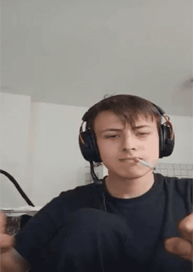

Jakub Kużnicz
Urodzony 15 sierpnia 2002 roku w Elblągu, niezwykle utalentowany przedstawiciel elbląskiego społeczeństwa znany też pod pseudonimem adrianzminecraft pod, którym grał na serwerze Minecraft.
SznycSpołeczeństwu jest znany głównie ze względu na swoje ofensywne wypowiedzi w kierunku Jasia, którego jest jednym z największych hejterów. Jako, że Jakub jest wielką
personą nigdy nie dotknął alkoholu ani innych używek, ponieważ jest dobrym chłopakmie i zawsze dzień dobry na klatce mówi.

Jakub przypala szluga kopiąc fose w Minecraft
Osiągnięcia
- Jako jedna z nielicznych osób na SznycWiki był wstanie wbić rangę lepszą niż platyna.
- Nagroda topowego kuriera DPD na sezon 2021/22
- Sam zajebał kilka osób na HIZI
Ważne wydarzenia
- piloński grill